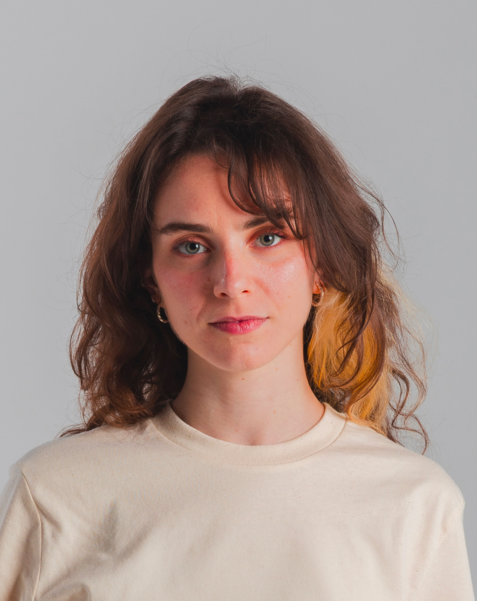

Rome, Italy · b. 1993
Eleonora
Danese
Music Supervisor
Selecting, clearing and shaping music for film and television. Songwriter as Kuni.
This is me
After almost seven years of working as a Graphic Designer and Art Director, with a focus on music, fashion, and advertising, and with almost fifteen years of professional experience working in the music industry in different roles, I have focused solely on music supervision for the last few years.
My skill set on the job includes: creative research, budget management, negotiation of the syncs directly with the rights holders, definition of the licenses, finalization of the soundtrack, and redacting the cue sheets. To make all of this happen, I naturally have to keep an open communication with every person involved in producing a movie or a TV series, from the writers to the director, from the editor to the marketing department, and so on.
I have worked with all the major streaming and TV platforms, including Netflix, Disney+, Prime Video, and Sky, as well as some of Italy's most important movie production companies.
While working on my career, I took care of my project as a songwriter: my stage name is Kuni, and my debut EP was released via Factory Flaws in June 2023. Two more singles were released in 2024, and more are coming in 2025.

01
Movies
& TV Series
2023 — 2026
TV Series
- TBA The Label Music Supervisor
- 2024 La legge di Lidia Poët, seconda stagione (The Law According to Lidia Poët) Music Coordinator
- Hanno ucciso l'Uomo Ragno, la leggendaria storia degli 883 (Accidentally Famous) Music Coordinator
- Qui non è Hollywood (This is not Hollywood) Music Coordinator
- Supersex Music Supervisor
- Antonia Music Supervisor
- No Activity — niente da segnalare Music Coordinator
Movies
- TBA Ho bisogno del tuo amore Music Consultant
- 2025 The Krampus Rises Music Consultant
- 2024 Diva Futura — Venezia 2024 official selection Music Coordinator
- Indagine su una storia d'amore Music Coordinator
- Una storia nera Music Coordinator
- Sei fratelli Music Coordinator
- La coda del diavolo Music Coordinator
Documentaries
- 2025 Arcobaleno Music Supervisor
- 2024 Sarò con te Music Consultant
- 2023 Frammenti di un percorso amoroso Music Coordinator
- Sento ancora la vertigine Music Coordinator
And that's (almost) all.
02
Talks
& Press
- Jun 2025 France Music Week International Delegation
- May 2025 Università Roma Tre Lecturer
- Oct 2024 Luiss Business School Speaker
- Apr 2024 EMMA — European Music Managers Alliance International Speaker
- Dec 2023 EMEE — European Music Exporters Exchange Expert
- Nov 2023 Linecheck Festival, Milan International Speaker
- Jul 2023 Fabrique du Cinéma Expert
03
Background
Experience
- '22 — todayMusic SupervisorFreelance
- '22 — '24Music Supervisor & CoordinatorGroenlandia Srl (Banijay Group)
- 2021Music Consultant & Social Media ManagerOperà Music
- Founder & Creative DirectorTuttifrutti — collective of creatives for independent music
- Playlist EditorFutura1993
- '17Promoter & Communication AssistantRadar Concerti
- '16 — '19Project ManagerBravo Dischi
- Band ManagerMoblon · Chiara Monaldi · Edoardo Baroni
- '16Production · Band Assistant · Backstage ManagerVilla Ada Roma Incontra il Mondo · Viteculture
- '14 — '19Music EditorL'Indiependente
- '11 — '12Talent Scout & Event ManagerTraffic Live Club
- '18 — '22Art Director & Graphic Designer (freelance)Walk In · Arkage (Artattack Group) · RCS Mediagroup · Gruppo Roncaglia
Education
- '16 — '22Pop · Modern · Jazz singing, accompaniment pianoScuola Popolare di Musica di Testaccio — Testaccio Gospel Voices choir
- '15 — '18Master's Degree — Visual & Innovation DesignRUFA — Rome University of Fine Arts
- '11 — '15Bachelor's Degree — Asian Languages and CivilizationsSapienza Università di Roma
- '06 — '11Classical High School DiplomaLiceo Classico Statale Virgilio, Roma
Languages
- ItalianMother tongue
- EnglishC2
- FrenchA2
- JapaneseA1
- KoreanA1
Tools
- Adobe SuiteIllustrator · Photoshop · InDesign · After Effects · Premiere
- Microsoft OfficeWord · Excel · PowerPoint · Outlook
Platforms & Softwares
- Basecamp
- Cuetrak
- Discogs
- SoundCloud
- Soundmouse
- Spotify
04
Kuni
2022 — today
Kuni is short for Kunimitsu. Songwriting project (indie-pop with punk-rock roots and melancholic lyricism) released through Factory Flaws. The debut EP, “Walls Have Told Me”, was released in 2023. Three more singles followed in 2024: “My Best”, “Showu”, and “Supposed To Be”. A full-length album is coming in 2026.
Contact
Let's
talk.
For music supervision, sync & press inquiries:
Roma (RM), Italy